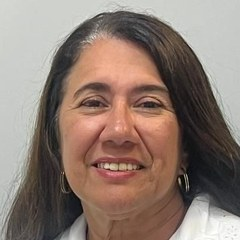
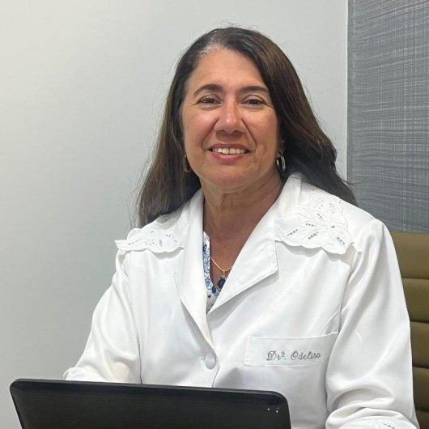

Início · Conheça a Dra. Odelisa Matos
Conheça a Dra. Odelisa Matos
Formada pela UFBA em 1986, em clínica privada desde 1990 e no Centro de Diabetes e Endocrinologia da Bahia desde 1994.

A médica
Formação e trajetória
- 1986
Medicina · UFBA
Universidade Federal da Bahia.
- 1988
Residência médica · 1988
- 1990
Clínica privada
Consultório próprio, hoje em Ondina.
- 1994
CEDEBA
Centro de Diabetes e Endocrinologia da Bahia, onde trabalha desde então.
A médica
O que guia o trabalho

“São meus pilares profissionais a ética, o conhecimento, o cuidado e o respeito por aqueles que dividem comigo o seu bem maior, a VIDA.”
— Dra. Odelisa Matos, em seu perfil profissional
A médica
Clínica médica, com foco em metabolismo
“Atuo na área de clínica médica, principalmente no tratamento do diabetes mellitus, obesidade, doenças da tireoide, menopausa, osteoporose e outras doenças metabólicas.”
— Dra. Odelisa Matos, em seu perfil profissional
Clínica médica · RQE 6371
Especialidade registrada no Conselho Federal de Medicina, com o CRM-BA 8669.
Adultos
Atendimento a adultos no consultório de Ondina, com hora marcada.
Cuidado contínuo
Diabetes, tireoide e ossos costumam pedir acompanhamento ao longo dos anos, com retornos combinados.
A médica
Centro de Diabetes e Endocrinologia da Bahia
Desde 1994
Trabalha no CEDEBA, o centro estadual de diabetes e endocrinologia, em Salvador.
Na fundação
Nas palavras dela: “o qual fui uma das fundadoras.”
O CEDEBA é um serviço da rede estadual, com regras próprias de acesso. As consultas particulares da Dra. Odelisa são no consultório de Ondina.
A médica
Sociedades e pesquisa
Sociedade Brasileira de Diabetes
Integra a diretoria da Regional Bahia.
Sociedade Brasileira de Endocrinologia e Metabologia
Membro da sociedade.
Qualidade de vida de pessoas com diabetes tipo 1 nas diferentes regiões do Brasil.
2015 · Diabetology & Metabolic Syndrome · Ler o resumo ↗
Adesão à dieta, controle da glicemia e fatores de risco cardiovascular no diabetes tipo 1.
2014 · Nutrition Journal · Ler o resumo ↗
Comportamento dos lipídios conforme a hemoglobina glicada no diabetes tipo 1.
2012 · Cardiovascular Diabetology · Ler o resumo ↗
Fale com a recepção
Qual dia e horário funcionam para você?
Escolha uma preferência e prepare a mensagem. A recepção responde e confirma.
Dúvidas frequentes
Perguntas sobre este tema
A Dra. Odelisa atende pelo CEDEBA no consultório?
Não. O consultório de Ondina é particular. Condições de atendimento e convênios são confirmados com a recepção.
As informações do site substituem uma consulta?
Não. São informações gerais, sem diagnóstico nem indicação individual de tratamento.
Contato
Vamos marcar a sua consulta?
Atendimento a adultos em Ondina, com hora marcada. A recepção confirma o dia e o horário.